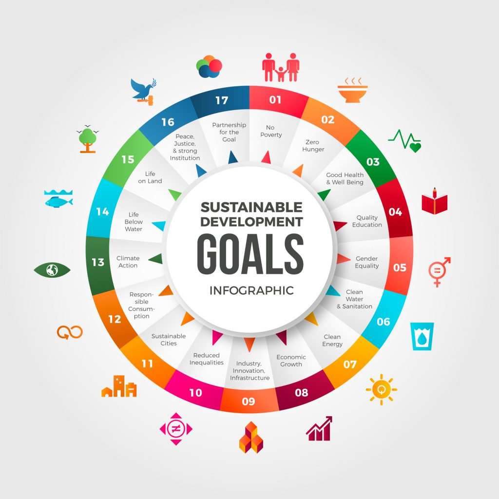

🤓Halo Semuanya, Perkenalkan Nama Saya Rosalyne Eleanor Tamba dari kelas 92/30🤩
Selamat datang di website saya,
disini kita bisa mengenal lebih tentang berbagai isu dan solusi global yang terkait dengan
Sustainable Development Goals (SDGs) dan juga peran penting Indonesia dalam kerjasama internasional.Melalui kerjasama kita bisa lihat bahwa usaha bersama bisa membawa dampak positif
bagi kesejahteraan masyarakat kita
,mulai dari kesehatan, pendidikan, hingga lingkungan yang berkelanjutan.
TPB/SDGs merupakan komitmen global dan nasional dalam upaya untuk menyejahterakan masyarakat mencakup 17 tujuan dan sasaran global tahun 2030 yang dideklarasikan baik oleh negara maju maupun negara berkembang di Sidang Umum PBB pada September 2015.
Isu kekerasan terhadap perempuan dan anak perempuan ini penting, tidak hanya karena masalah kesehatan moral atau masalah masyarakat yang ditimbulkan, tapi juga karena ancaman kekerasan domestik yang membuat gerakan dan tindakan perempuan terbatas di dalam rumah sehingga membatasi pilihan hidup mereka. Global Burden of Disease mengestimasi bahwa lebih dari 30% perempuan >15 tahun mendapat pelecehan fisik atau seksual dari pasangannya selama masa hidup mereka. Mengetahui insiden dan prevalensi kekerasan menjadi langkah awal untuk memastikan kebijakan pencegahan tepat sasaran. Isu kekerasan terhadap perempuan dan anak perempuan sangat penting untuk diperhatikan, bukan hanya karena masalah kesehatan dan moral yang ditimbulkan, tetapi juga karena dampaknya terhadap kehidupan perempuan. Kekerasan domestik atau kekerasan dalam rumah tangga sering kali membatasi gerakan perempuan dan menghalangi mereka untuk bebas memilih jalannya hidup. Hal ini membuat perempuan merasa terkurung di dalam rumah dan tidak memiliki kebebasan untuk menentukan masa depan mereka sendiri. Menurut data dari Global Burden of Disease, lebih dari 30% perempuan yang berusia lebih dari 15 tahun mengalami kekerasan fisik atau seksual dari pasangannya selama hidup mereka. Angka ini menunjukkan betapa banyak perempuan yang menjadi korban kekerasan, baik di dalam rumah maupun dalam hubungan yang mereka jalani. Kekerasan seperti ini tidak hanya merusak fisik mereka, tetapi juga bisa menghancurkan mental dan emosional perempuan, yang berpengaruh pada kualitas hidup mereka. Mengetahui seberapa sering kekerasan ini terjadi dan seberapa besar pengaruhnya pada perempuan adalah langkah pertama yang penting untuk bisa mengatasi masalah ini. Dengan mengetahui insiden dan prevalensi kekerasan terhadap perempuan, kita bisa merancang kebijakan dan program pencegahan yang lebih tepat dan efektif. Kebijakan yang baik akan membantu mengurangi jumlah kekerasan dan memberikan perlindungan yang lebih baik bagi perempuan dan anak perempuan. Jadi, sangat penting bagi kita semua untuk memahami masalah ini dan mendukung upaya-upaya untuk menghentikan kekerasan terhadap perempuan.
Kebijakan Tujuan 5 bertuju pada:
1. Menciptakan kerangka kerja kebijakan yang berpihak pada kaum miskin dan sensitif gender
2. Pelaksanaan Sistem Perlindungan Sosial
3. Membangun ketahanan terhadap bencana lingkungan, ekonomi dan sosial
Program Tujuan 5 mencakup:
1. Pendidikan untuk Perempuan dan Anak Perempuan
2. Pemberdayaan Ekonomi Perempuan
3. Pencegahan Kekerasan Berbasis Gender
4. Peningkatan ketersediaan farmasi dan alat kesehatan
5. Partisipasi Perempuan dalam Pengambilan Keputusan
6. Pengakuan dan Pembagian Beban Kerja Rumah Tangga
7. Perubahan Sosial dan Penghapusan Stereotip Gender
 Contoh Konkret yang dilakukan Negara-negara:1. Kanada🇨🇦: Kanada memiliki kebijakan ketat untuk melindungi hak-hak perempuan🫸🏼, termasuk undang-undang yang melarang diskriminasi gender di tempat kerja dan memastikan perempuan mendapat perlindungan dari kekerasan berbasis gender.
Sumber: https://laws-lois.justice.gc.ca/eng/acts/h-6/
2.Indonesia: Program Jaminan Kesehatan Nasional (JKN) yang mencakup asuransi kesehatan untuk semua warga negara juga berperan dalam menyediakan layanan kesehatan bagi perempuan, termasuk dalam hal akses ke kesehatan reproduksi dan pelayanan melahirkan yang aman.
Sumber:https://www.bpjs-kesehatan.go.id/
Sumber:https://sdgs.bappenas.go.id/?authuser=0
Sumber:https://sdgs.bappenas.go.id/17-goals/goal-5/
Indonesia bekerja sama dengan negara-negara lain secara langsung dalam bidang kesehatan. Contohnya, kerjasama dengan Jepang melalui Japan International Cooperation Agency (JICA), yang mendukung program peningkatan fasilitas kesehatan, seperti rumah sakit dan pelatihan tenaga medis.Kerjasama Bilateral di Bidang Politik. Indonesia bekerja sama dengan banyak negara di bidang kesehatan, yang sangat penting untuk mencapai tujuan Sustainable Development Goals (SDGs), terutama yang berkaitan dengan kesehatan dan kesejahteraan. Kerjasama ini membantu Indonesia untuk meningkatkan sistem kesehatan dan memastikan masyarakat bisa mendapatkan pelayanan yang lebih baik. Salah satu contoh kerjasama yang sangat penting adalah dengan Jepang melalui Japan International Cooperation Agency (JICA). JICA membantu Indonesia dengan mendukung pembangunan fasilitas kesehatan seperti rumah sakit dan juga melatih tenaga medis. Program ini bertujuan untuk meningkatkan kualitas rumah sakit dan pelayanan kesehatan di Indonesia, serta memberikan pelatihan bagi dokter, perawat, dan tenaga medis lainnya agar mereka lebih terampil dalam merawat pasien. Selain itu, Indonesia juga bekerja sama dengan Australia dalam mengatasi masalah penyakit menular seperti tuberkulosis, malaria, dan HIV/AIDS. Australia memberikan bantuan dalam pengobatan dan program pencegahan penyakit agar angka penyakit menular bisa berkurang di Indonesia. Selain itu, mereka juga membantu meningkatkan pelayanan kesehatan ibu dan anak untuk mengurangi angka kematian ibu hamil dan bayi. Program-program ini penting untuk memastikan bahwa semua orang, terutama ibu dan anak, mendapatkan perawatan yang baik. Kerjasama Indonesia dengan Amerika Serikat melalui USAID juga memberikan manfaat besar. USAID membantu Indonesia dengan meningkatkan layanan kesehatan dan memperkuat sistem kesehatan di Indonesia. Mereka juga membantu dalam pencegahan penyakit dan memberikan pelatihan kepada tenaga medis. Salah satu program yang sangat membantu adalah peningkatan sistem informasi kesehatan di Indonesia, sehingga data tentang kesehatan bisa dikelola dengan lebih baik. Dengan adanya kerjasama ini, Indonesia bisa memperbaiki fasilitas kesehatan, melatih lebih banyak tenaga medis, dan mengurangi penyakit-penyakit yang berbahaya. Semua program ini sangat mendukung upaya Indonesia untuk mencapai tujuan SDGs, seperti meningkatkan kesehatan ibu dan anak, mengurangi penyakit menular, dan memberikan layanan kesehatan yang lebih baik bagi seluruh masyarakat. Kerjasama dengan negara-negara seperti Jepang, Australia, dan Amerika Serikat juga membantu Indonesia dalam memperkuat sistem kesehatannya agar lebih baik di masa depan
Dengan Australia, Indonesia menjalin kerjasama dalam program pengendalian penyakit menular seperti tuberkulosis, malaria, dan HIV/AIDS, serta peningkatan pelayanan kesehatan ibu dan anak.
Amerika Serikat juga telah bekerja sama dengan Indonesia melalui Badan Pembangunan Internasional Amerika Serikat (USAID) dalam bidang peningkatan layanan kesehatan, penguatan sistem kesehatan, dan pencegahan penyakit.
Bantuan Kemanusiaan: Indonesia, melalui lembaga-lembaga seperti Palang Merah Indonesia (PMI), dapat memberikan bantuan kemanusiaan di daerah-daerah yang terdampak konflik atau bencana alam di Afghanistan, termasuk distribusi obat-obatan dan pelayanan kesehatan dasar
Sumber:https://r.search.yahoo.com/_ylt=Awrx_8e.oUZnKwIAuN7LQwx.;_ylu=Y29sbwNzZzMEcG9zAzEEdnRpZAMEc2VjA3Ny/RV=2/RE=1733891774/RO=10/RU=https%3a%2f%2fppkn.co.id%2fbilateral-adalah%2f/RK=2/RS=AM1VF8ZcxTORQ_FMMtJp.qDQa50-
Indonesia juga aktif dalam berbagai organisasi regional, di mana negara ini berperan penting dalam menjaga perdamaian dan stabilitas kawasan. Indonesia aktif dalam berbagai organisasi regional, di mana negara ini memainkan peran yang sangat penting dalam menjaga perdamaian dan stabilitas kawasan. Indonesia adalah anggota dari ASEAN (Asosiasi Negara-negara Asia Tenggara), yang bertujuan untuk menciptakan kerjasama antara negara-negara di kawasan Asia Tenggara dalam berbagai bidang, termasuk politik, ekonomi, dan sosial. Dalam ASEAN, Indonesia berperan sebagai negara yang mendukung kerjasama antarnegara, serta mempromosikan perdamaian dan keamanan di kawasan tersebut. Selain itu, Indonesia juga terlibat dalamEAS (East Asia Summit), yang merupakan forum untuk negara-negara Asia Timur dan Pasifik untuk membahas isu-isu penting, termasuk keamanan dan pembangunan. Melalui forum ini, Indonesia berusaha menjaga hubungan baik dengan negara-negara besar seperti China, Jepang, dan Amerika Serikat, serta berkontribusi dalam menciptakan stabilitas di kawasan Asia Pasifik. Indonesia juga aktif dalam organisasi APEC (Asia-Pacific Economic Cooperation), yang fokus pada kerjasama ekonomi dan perdagangan antar negara di kawasan Asia-Pasifik. Melalui APEC, Indonesia membantu mendorong pertumbuhan ekonomi yang inklusif dan berkelanjutan. Dengan berpartisipasi dalam berbagai organisasi ini, Indonesia menunjukkan komitmennya untuk menjaga perdamaian, stabilitas, dan kemajuan di kawasan Asia Tenggara dan sekitarnya. Peran Indonesia dalam organisasi regional ini sangat penting, karena dengan menjaga hubungan baik dengan negara-negara tetangga, Indonesia dapat memperkuat posisi dan pengaruhnya di kancah internasional. Selain itu, Indonesia juga berusaha untuk menyelesaikan masalah yang muncul di kawasan melalui dialog dan kerjasama, bukan dengan konflik. Semua usaha ini membantu Indonesia dalam menjaga perdamaian dan kesejahteraan di kawasan, serta mempererat hubungan dengan negara-negara lain. Beberapa bentuk kerjasama regional Indonesia antara lain:.
ASEAN (Association of Southeast Asian Nations): Indonesia adalah salah satu pendiri ASEAN dan berperan aktif dalam organisasi ini. ASEAN berfokus pada penguatan hubungan antar negara-negara Asia Tenggara di berbagai bidang, termasuk politik, ekonomi, keamanan, dan budaya. Indonesia juga memainkan peran dalam membangun konsensus regional untuk menghadapi isu-isu seperti ketegangan di Laut China Selatan dan terorisme.
Kerjasama regional mencakup kolaborasi dalam kerangka organisasi atau forum regional yang melibatkan negara-negara Asia atau Asia Selatan, yang sering kali terkait dengan permasalahan kesehatan yang bersifat lintas batas. Beberapa bentuk kerjasama regional yang dapat dijajaki antara Indonesia dan Afghanistan antara lain:
Penyuluhan dan Program Vaksinasi Regional: Indonesia dan Afghanistan dapat bekerja sama dalam program vaksinasi regional, terutama di wilayah Asia Selatan, untuk mencegah wabah penyakit menular yang dapat menyebar antarnegara.
Sumber:https://r.search.yahoo.com/_ylt=AwrKBR0YokZnSwIADCvLQwx.;_ylu=Y29sbwNzZzMEcG9zAzIEdnRpZAMEc2VjA3Ny/RV=2/RE=1733891865/RO=10/RU=https%3a%2f%2fsepositif.com%2fpengertian-regional-adalah-arti-tujuan-contoh-dan-jenis-regional%2f/RK=2/RS=RFtU_Ezz.FPx25DS_l9FaXXsS4k-
Sumber: https://www.kemlu.go.id
Sumber:https://www.apec.org/
Indonesia terlibat dalam banyak organisasi multilateral internasional yang berfokus pada isu-isu global seperti perdamaian dan keamanan internasional, perubahan iklim, dan pembangunan berkelanjutan.Indonesia terlibat aktif dalam berbagai organisasi multilateral internasional, yang bertujuan untuk menyelesaikan masalah-masalah besar yang mempengaruhi seluruh dunia, seperti perdamaian dan keamanan internasional, perubahan iklim, dan pembangunan berkelanjutan. Sebagai negara dengan populasi terbesar keempat di dunia, Indonesia menyadari pentingnya bekerja sama dengan negara lain untuk menciptakan dunia yang lebih aman dan sejahtera bagi semua. Salah satu contoh organisasi internasional yang diikuti Indonesia adalah Perserikatan Bangsa-Bangsa (PBB), di mana Indonesia berperan dalam menjaga perdamaian dunia, menyelesaikan konflik internasional, dan membantu negara-negara yang sedang mengalami krisis. Selain itu, Indonesia juga aktif dalam COP (Conference of the Parties) yang membahas tentang perubahan iklim. Indonesia berperan penting dalam mencari solusi untuk mengurangi emisi gas rumah kaca dan menjaga keberlanjutan lingkungan. Melalui organisasi ini, Indonesia berkomitmen untuk mengurangi dampak perubahan iklim yang sudah mulai terasa di seluruh dunia, termasuk di Indonesia sendiri. Indonesia juga berpartisipasi dalam organisasi yang membahas pembangunan berkelanjutan, seperti SDGs (Sustainable Development Goals) yang dicanangkan oleh PBB. Indonesia berusaha untuk mencapai berbagai tujuan pembangunan berkelanjutan, seperti mengurangi kemiskinan, meningkatkan pendidikan, serta menyediakan akses kesehatan yang lebih baik bagi semua orang. Dengan bergabung dalam organisasi-organisasi internasional ini, Indonesia dapat berbagi pengalaman dan belajar dari negara lain yang juga berusaha menciptakan dunia yang lebih baik. Peran aktif Indonesia dalam berbagai organisasi ini menunjukkan komitmennya untuk menjadi bagian dari solusi global, bukan hanya untuk dirinya sendiri, tetapi juga untuk seluruh dunia. Indonesia berusaha untuk tidak hanya memperjuangkan kepentingan nasional, tetapi juga bekerja sama untuk menghadapi tantangan global bersama-sama. Keikutsertaan Indonesia dalam organisasi multilateral ini memperkuat posisi negara dalam kancah internasional dan membantu mempererat hubungan antarnegara di dunia. Beberapa contoh kerjasama multilateral Indonesia antara lain:
G-20: Indonesia menjadi anggota dari Grup 20 (G-20), yang merupakan forum penting bagi negara-negara dengan ekonomi terbesar di dunia. Dalam forum ini, Indonesia mendorong kerjasama untuk mengatasi tantangan global seperti perubahan iklim, pemulihan ekonomi pasca-pandemi, dan ketimpangan ekonomi.
Kerjasama multilateral dalam bidang kesehatan melibatkan banyak negara, organisasi internasional, dan lembaga donor. Indonesia dan Afghanistan bisa bekerja sama dalam berbagai forum internasional dan multilateral, seperti:
Organisasi Kesehatan Dunia (WHO): Indonesia dan Afghanistan dapat terlibat dalam berbagai program yang dicanangkan oleh WHO, seperti program vaksinasi global, pengendalian penyakit menular, serta upaya penguatan sistem kesehatan di negara-negara berkembang. Kerjasama ini sering kali melibatkan dana dan bantuan teknis dari lembaga internasional.
Sumber:https://r.search.yahoo.com/_ylt=AwrKDw9bokZnhQIAOKDLQwx.;_ylu=Y29sbwNzZzMEcG9zAzEEdnRpZAMEc2VjA3Ny/RV=2/RE=1733891931/RO=10/RU=https%3a%2f%2fppkn.co.id%2fmultilateral-adalah%2f/RK=2/RS=7zg_Kogum.u8zvp6d.2Oo6szbuc-
Kesimpulannya adalah SDGs atau Sustainable Development Goals adalah 17 tujuan yang dibuat oleh PBB atau Perserikatan Bangsa-bangsa untuk menciptakan dunia yang lebih baik dan berkelanjutan. Tujuan-tujuan ini meliputi mengatasi kemiskinan, kelaparan, pendidikan, kesetaran gender, dan perubahan iklim. SDGs mengundang semua negara untuk bekerja sama dalam mencapai tujuan itu. Hubungan kerjasama SDGs dengan kerjasama bilateral, regional, dan multilateral adalah penting. Kerjasama Bilateral berarti kedua negara saling bantu untuk mencapai tujuan SDGs. Kerjasama regional melibatkan meliputi kelompok negara dalam suatu wilaya untuk mencapai tujuan SDGs. Sedangkan kerjasama multilateral melibatkan banyak negara di dunia yang bekerja sama di bawah organisasi internasional, seperti PBB.
SDGs (Sustainable Development Goals) adalah tujuan pembangunan yang berkelanjutan yang perlu dicapai oleh Indonesia dengan bekerja sama di tingkat bilateral, regional, dan multilateral. Kerjasama bilateral dengan negara lain membantu Indonesia dalam pembangunan infrastruktur, pengurangan kemiskinan, dan pemberdayaan masyarakat. Kerjasama regional dengan negara-negara ASEAN membantu Indonesia mencapai tujuan SDGs, seperti ketahanan pangan dan penanganan perubahan iklim. Di tingkat multilateral, Indonesia bekerja dengan organisasi internasional seperti PBB untuk memantau kemajuan SDGs dan mengatasi masalah global seperti perubahan iklim. Kerjasama ini juga membantu Indonesia mendapatkan dana dan teknologi untuk mencapainya. Dampak positifnya termasuk peningkatan kualitas hidup masyarakat melalui pendidikan dan kesehatan yang lebih baik. Selain itu, kerjasama ini mendukung ekonomi Indonesia agar tumbuh secara berkelanjutan. Namun, masih ada tantangan, seperti kesenjangan sosial dan keterbatasan dana untuk mendukung pencapaian SDGs. Kerjasama internasional juga penting agar Indonesia dapat mengatasi masalah-masalah tersebut. Secara keseluruhan, kerjasama ini sangat membantu Indonesia dalam mencapai tujuan pembangunan yang lebih adil dan berkelanjutan
Sumber:https://sdgs.un.org/
Sumber:https://www.bappenas.go.id
Sumber:https://asean.org/
Dua nilai Pancasila yang paling berkaitan dengan Sustainable Development Goals (SDGs) adalah Kemanusiaan yang Adil dan Beradab serta Keadilan Sosial bagi Seluruh Rakyat Indonesia. Kemanusiaan yang Adil dan Beradab mengajarkan kita untuk memperlakukan semua orang dengan hormat dan adil. Dalam konteks SDGs, ini berkaitan dengan upaya mengurangi kemiskinan, meningkatkan kesehatan, dan memberikan pendidikan yang layak bagi semua orang. Kerjasama internasional Indonesia, baik secara bilateral maupun multilateral, berfokus pada membantu negara lain dan masyarakat yang membutuhkan, serta memastikan hak asasi manusia dihormati. Keadilan Sosial bagi Seluruh Rakyat Indonesia mengingatkan kita untuk memastikan bahwa tidak ada satu pun yang tertinggal dalam pembangunan. Ini sangat relevan dengan tujuan SDGs yang berfokus pada pemerataan kesejahteraan, mengurangi kesenjangan sosial dan ekonomi, serta memastikan akses yang setara terhadap peluang dan sumber daya bagi semua. Dalam kerjasama internasional, Indonesia berkomitmen untuk menciptakan keadilan sosial baik di dalam negeri maupun di dunia global.
Sumber:https://www.bpip.go.id